Sam Nunn School of International Affairs · 31 August 2026
Out of the Dark Ages?
Supercharging your research workflow with LLMs
Day 1 of 5 · 11:00–13:30 · Nunn Conference Room
Stephan De Spiegeleire, The Hague Centre for Strategic Studies
How this week works
Three ground rules. The third is the important one.
Please interrupt
Questions welcome at any time. Do not wait for a pause.
Topics will bleed into the next day
Perfectly fine. The days are not sealed off from each other.
We won't finish everything today – by design
Quality over coverage. Each day stands alone, so arriving late costs you nothing.
Five pillars, five days
The approach has five parts. So does the week. They are the same five.
Day 1 · today
Broad exploration of the topic
Why the way we work now doesn't hold.
Day 2
A rich, multi-layered taxonomy
An instrument, not a filing system.
Day 3
A multilingual corpus
Finding what you have been missing.
Day 4
A documented classification pipeline
The taxonomy, applied and evaluated.
Day 5
Analysis and deliverables
Your project, and the usable kit.
Sound familiar?
Which of these is yours?
Have I read enough? What am I missing?
I found 3,000 papers. Now what?
My lit review is 50 pages of summary. Where's the actual insight?
Everyone cites the same 10 papers. Is that really the whole field?
How do I deal with sources in languages I don't understand?
My committee wants ‘systematic analysis’ but I'm just… reading and highlighting?
The honest diagnosis
Traditional research methods were not built for an era of
200 million scholarly articles, multilingual corpora
and information overload.
But new tools are.
Let's start somewhere else
A salutary side-story.
Not about international affairs. About medicine.
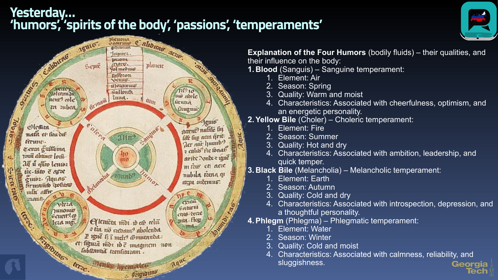
GaTech Session 1, 2 Sep 2025
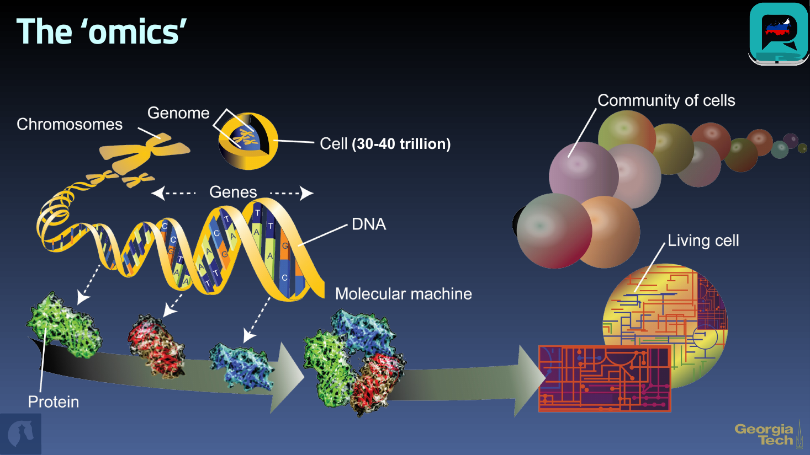
GaTech Session 1, 2 Sep 2025
BioNLP and biomedical ontologies
Biology did not just collect data. It built shared vocabularies so that findings could accumulate across labs, languages and decades.
Shared ontologies
Gene Ontology, MeSH, UMLS. One agreed structure, used by everyone.
Text mining as a discipline
Millions of papers read by machine, findings extracted and pooled.
Cumulative knowledge
A result from 2004 still composes with a result from 2024.
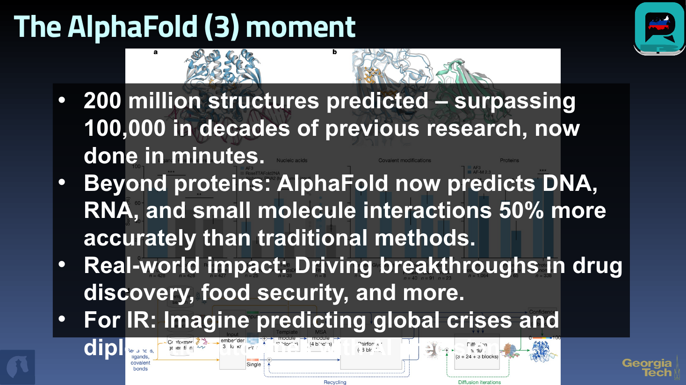
GaTech Session 1, 2 Sep 2025
The question this week asks
What would the equivalent moment look like
for international affairs?
Not prediction with false precision. Measurement where we currently have anecdote.
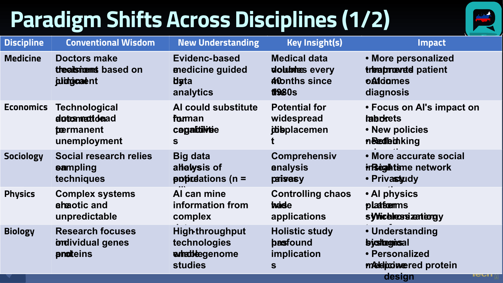
GaTech Session 1, 2 Sep 2025
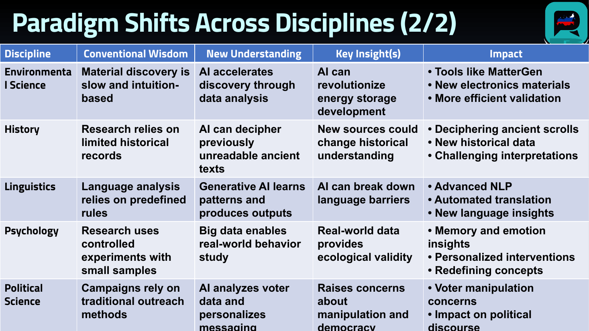
GaTech Session 1, 2 Sep 2025
The obvious question
Every neighbouring discipline crossed over.
Why didn't ours?
Three reasons. The third one is about us.
(Russian) deterrence: we hardly know ye
Our own assessment of the field, unchanged since we first made it.
- We have virtually no solid empirical datasets on actual deterrent behaviour and dynamics – a stark contrast to deterrence-broad.
- The field has been almost entirely ‘analogue’, foregoing benefits that proved abundant in other disciplines.
- Strong internally and externally imposed disincentives for collaboration – differently for think tanks than for academia, with equally pernicious consequences.
And we are not innocent
“We are quick to blame others – they've neglected the field as we were telling them not to, send more money.”
Even at current funding we could produce far higher value if we:
- Build and share datasets – and text IS data now
- Start collaborating more and better
- Accelerate our knowledge production rate and quality
The ‘actionable knowledge’ production chain
US DoD research and development, built out end to end – for one kind of science.
$140–156B
per year, hard sciences (FY2020–21)
Soft sciences: 6.1 and 6.2 only
Academia and FFRDCs/UARCs. 6.3 onward is blank – “Managed by ?”
Minerva
A gesture, not a pipeline.
It was not always this way
Post-war America built a serious academic infrastructure –
people, institutions, training programmes, language investment –
to understand a peer competitor.
RAND / UCLA Center for Soviet Studies
1990–91 programme. Sovietology as national infrastructure: Title VI, Title VIII, the NDEA era. A Soviet TV monitoring facility. A generation of trained analysts – including this one.
We let it atrophy
And the funding pipeline for soft-science strategic analysis never caught up.
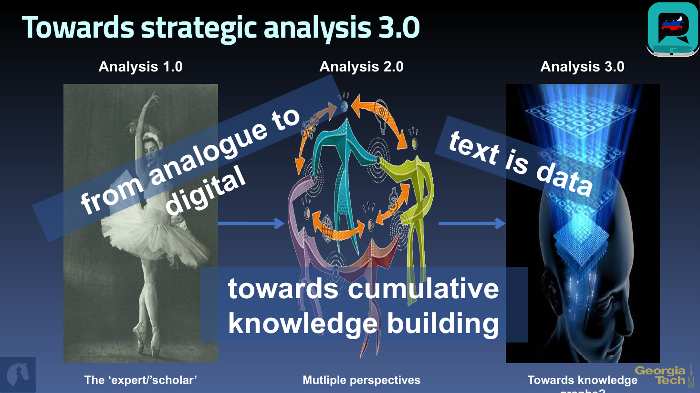
GaTech Session 1, 2 Sep 2025
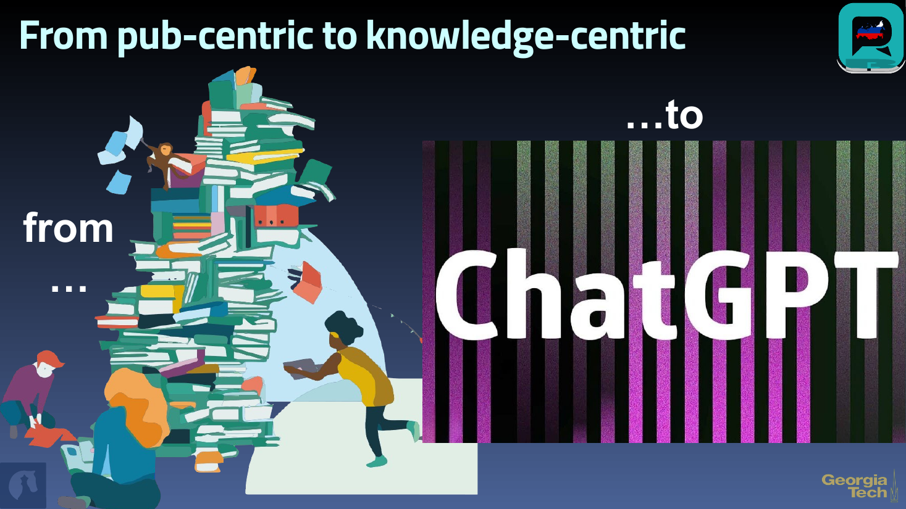
GaTech Session 1, 2 Sep 2025
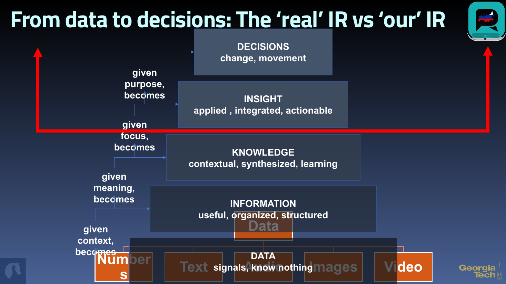
GaTech Session 1, 2 Sep 2025
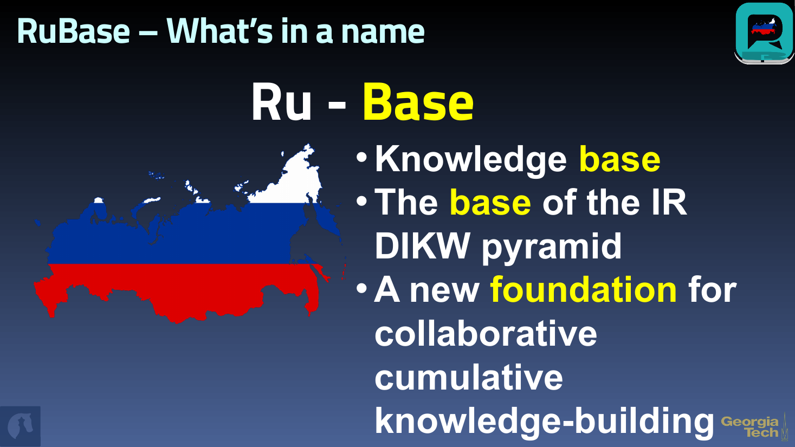
GaTech Session 1, 2 Sep 2025
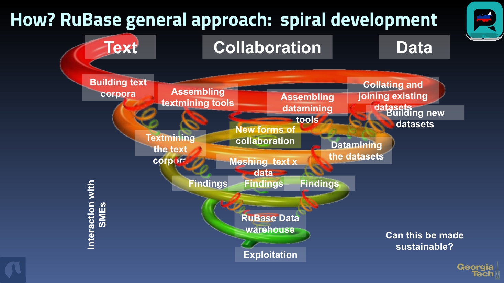
GaTech Session 1, 2 Sep 2025
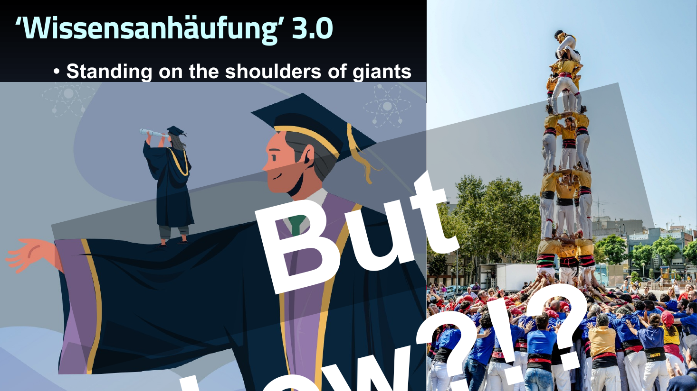
GaTech Session 1, 2 Sep 2025
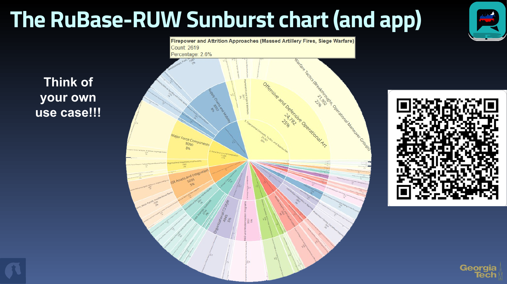
GaTech Session 1, 2 Sep 2025
What this has actually produced
Four projects, one method – the same one you will use on your own question this week.
2,500+
WACKO
Contemporary official documents, tested against the semantic echoes of 1,000+ Russian philosopher books. Russia's geostrategic operating system.
1958–2020
Red Lines
Deterrent rhetoric over time. Red lines do not – yet – track Western provocations, or the reverse.
1,400
Grey Horizon
Taxa across 13 dimensions of below-threshold conflict.
1M+
Russian Regeneration
Taxonomically annotated text chunks in one working corpus.
Where do you actually get the data?
The honest state of bibliographic infrastructure.
Hard to access in quantity
Disappointing quality
Inconsistencies and omissions even within a single database.
Significant overlap across them
Surprisingly few value-added services
The Lens
Large, and online visual exploration
50,000 publications per batch when logged in
Which is what makes a genuinely broad literature review possible – our deterrence epistemic MRI.
And then straight into Zotero, so the corpus is yours and stays yours.
An epistemic MRI of a field
Deterrence in international studies, as a measurable object rather than a reading list.
810
articles
Scopus, Deterrence-IS, 1958–2020
2,312
terms
Title, abstract, keywords
41,868
links
Co-occurrence structure of the field
Where is Russia in this?
Which clusters, which decades, which bursts – and which conversations it never entered.
When you look at who is actually producing the work
Note the small Ns.
Top institutions, most active authors, top fields of study. The field you assumed was crowded is not.
And then: what the databases cannot see
Recall is not a technicality. It decides what your field is allowed to contain.
The Chinese scholarly record
Coverage in Western bibliographic databases is far from complete – and few researchers know it.
FSU bias
Coverage of the field is small, and skewed. What you retrieve is not what exists.
The consequence
An unexamined query is a claim about the world. Usually a false one.
LLMs: pros and cons
What they give you
- A broader aperture to frame the question
- Rapid summarisation at corpus scale
- Idea generation and counterargument
- Drafting and visualisation support
What they cost you
- Hallucination – plausible, ungrounded, needs checking
- Bias inherited from training data
- Pattern recognition without causal understanding
But every one of these applies to humans as well – and arguably more.
Bibliographical RAG
Retrieval-augmented generation, pointed at the literature: retrieve real sources first, generate second.
The tools will change before the semester ends. The verification habit will not: never trust, always check.
Your turn
The rest of today is yours. Three things to leave with.
One
Accounts working
The Lens · OpenAlex · Claude. Free. Do it now, not tonight.
Two
The seed corpus in hand
Pre-built, so nothing you do this week depends on a download finishing.
Three
Your research question, in one sentence
Then read it to your neighbour. If they cannot repeat it back, it is not one sentence yet.
Before tomorrow
Write your research question. One sentence.
Bring it tomorrow –
Day 2 builds your taxonomy on top of it.
Prefer not to use your own? Take the seed corpus and the question that comes with it.
Everything from today, and everything coming:
one link, live all week.